Kumpulan resep Nusantara dengan cita rasa autentik dari Sabang sampai Merauke
Temukan cita rasa autentik dari berbagai makanan khas provinsi Indonesia
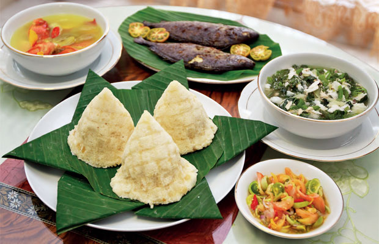
Kasuami Terbuat dari singkong parut yang dikukus dan dibentuk kerucut.

Jagung Bose terbuat dari jagung putih yang direbus bersama kacang dan santan.

Ikan Kuah Kuning menggunakan ikan laut segar seperti kakap atau tongkol.

Udang Selingkuh adalah udang air tawar besar di daerah pegunungan Wamena.
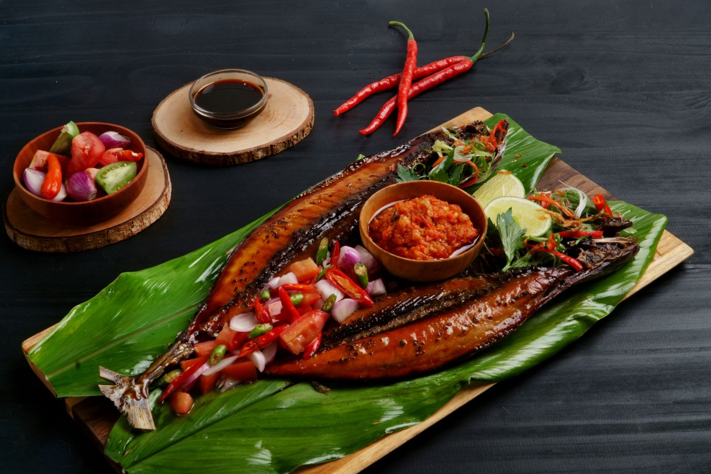
Ikan dibakar di atas bara tanpa banyak bumbu & sambal rica mentah.
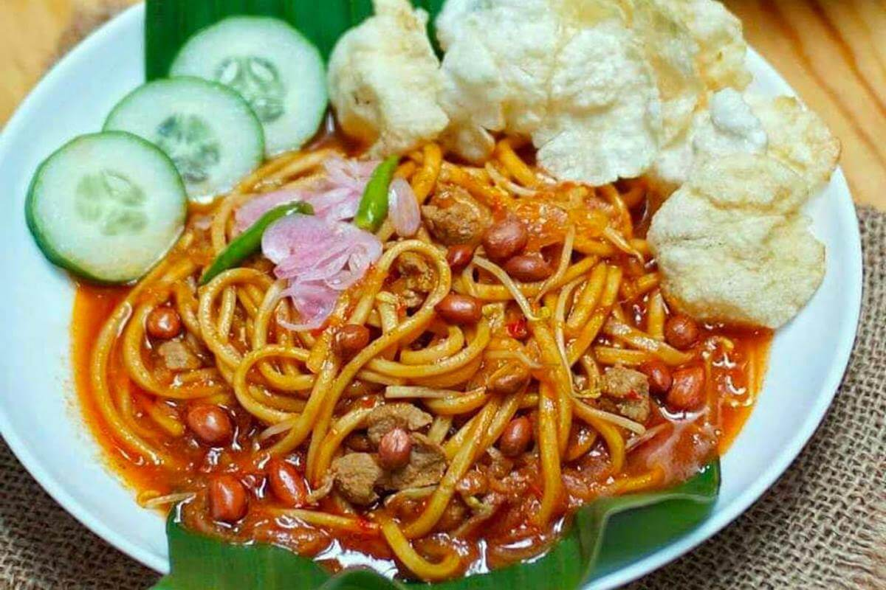
Mi pedas gurih khas Aceh dengan kari rempah.

Ikan dan sagu disajikan dengan cuko pedas khas Palembang.
Daging sapi dimasak lama dengan santan dan rempah.

Udang dengan kuah santan pedas khas Melayu.
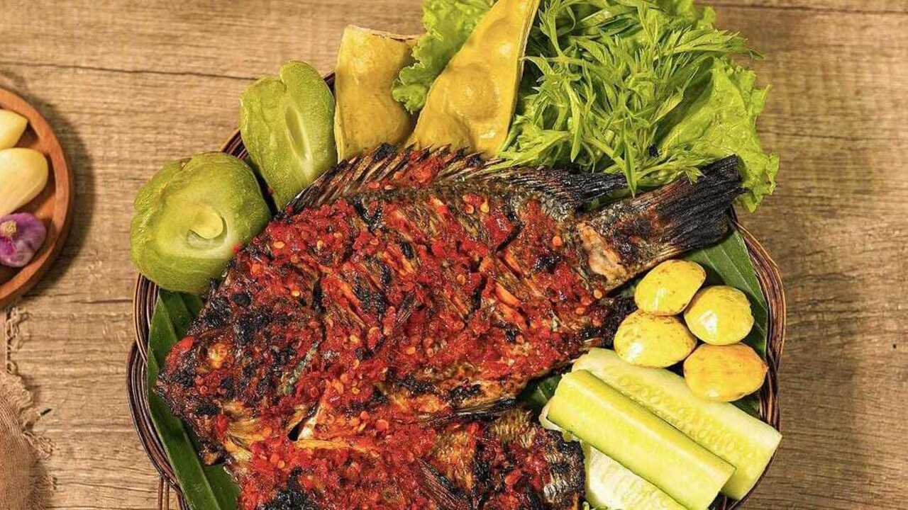
Ikan goreng atau bakar dengan sambal tempoyak.

Udang dengan potongan nanas dalam santan gurih.
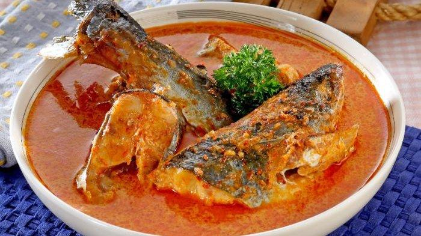
Ikan patin dimasak dengan kuah santan pedas gurih.
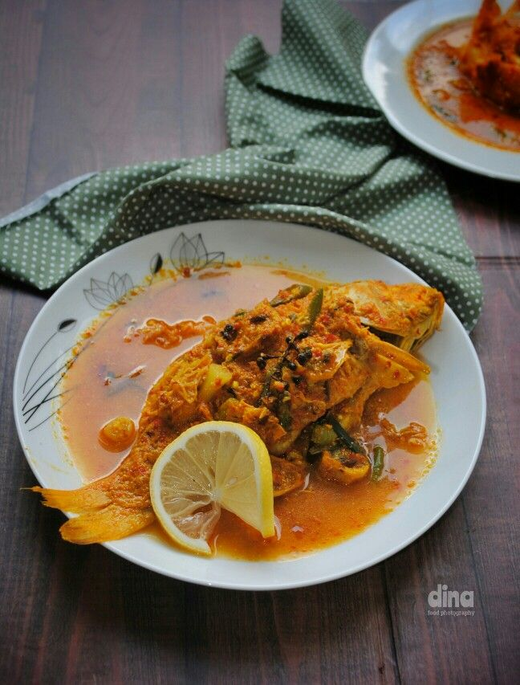
Ikan mas dimasak bumbu kuning khas Batak.
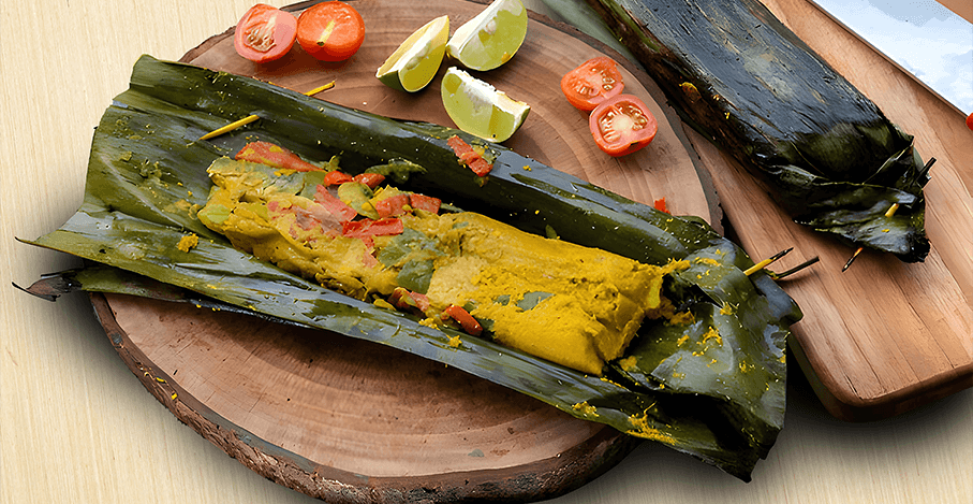
Ikan bumbu rempah dibungkus daun talas dan dikukus.
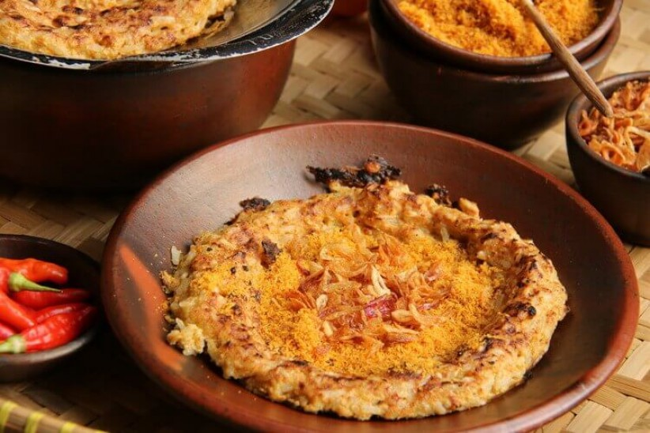
Nasi ketan, telur, dan serundeng khas Betawi.
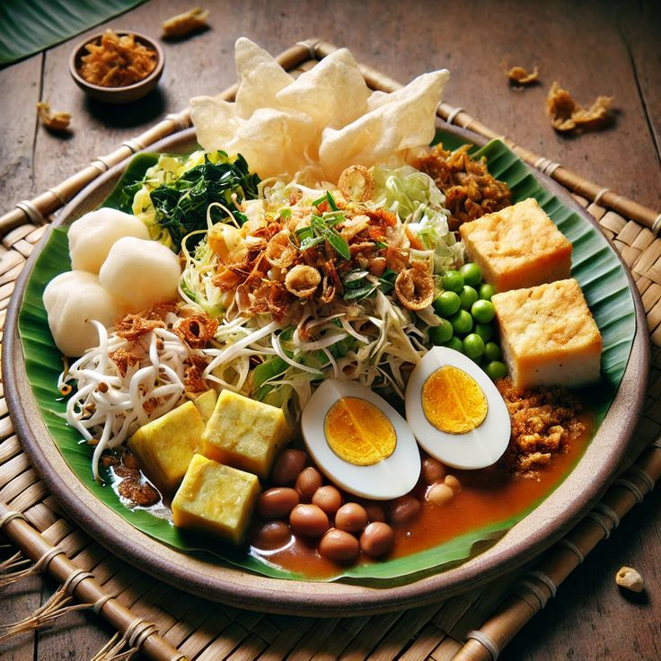
Sayuran mentah dengan bumbu kacang pedas segar.
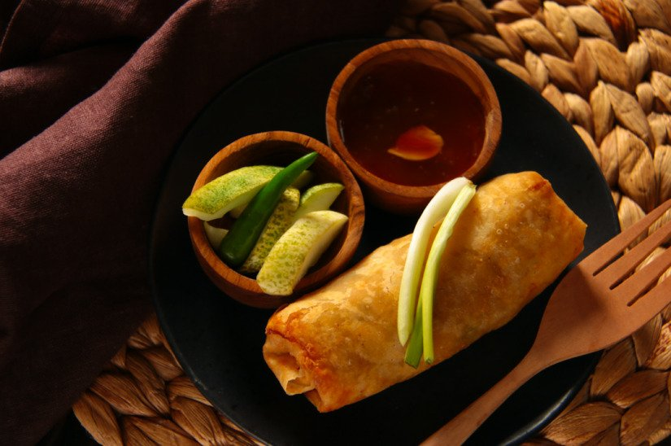
Kulit tipis isi rebung dan udang khas Semarang.
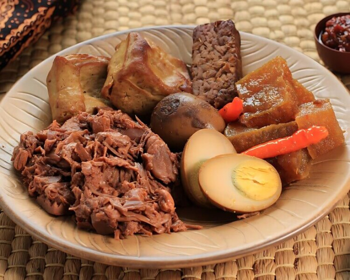
Nangka muda manis dimasak dengan santan kental.
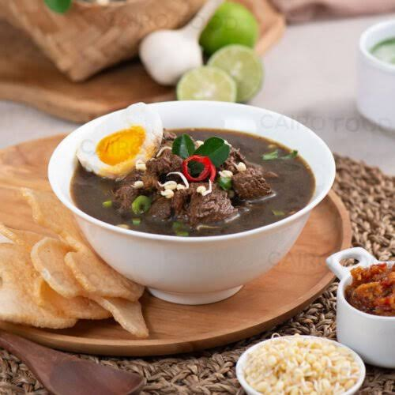
Kuah hitam gurih dengan daging sapi khas Surabaya.

Ayam panggang rempah lengkap khas Bali.

Sate sapi dengan lontong daun aren khas Lombok.

Daging sapi diasap perlahan khas Kupang.
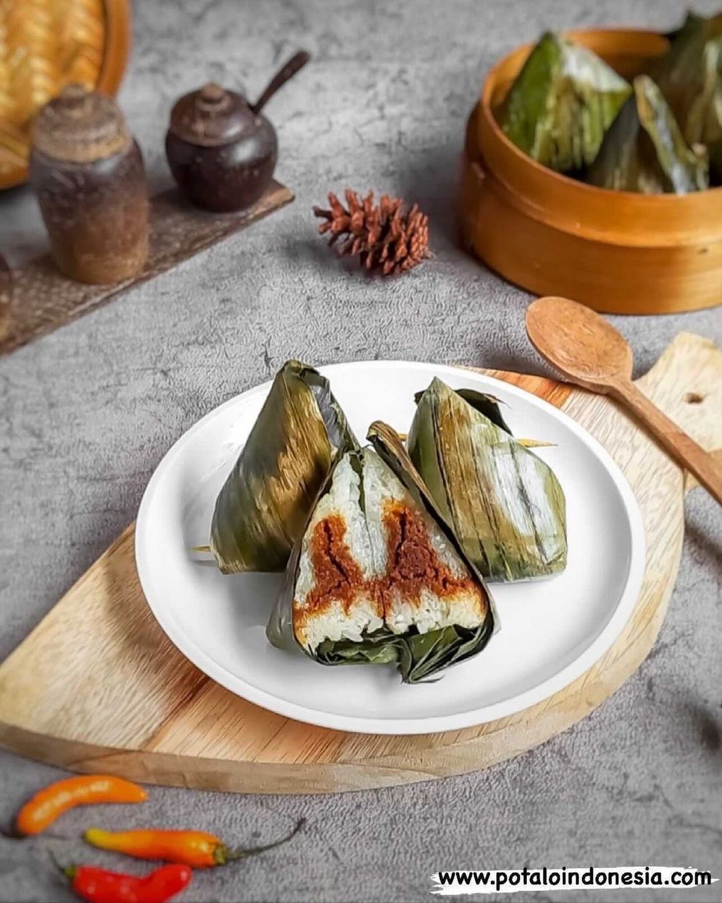
Nasi pulut isi udang dibungkus daun pisang.
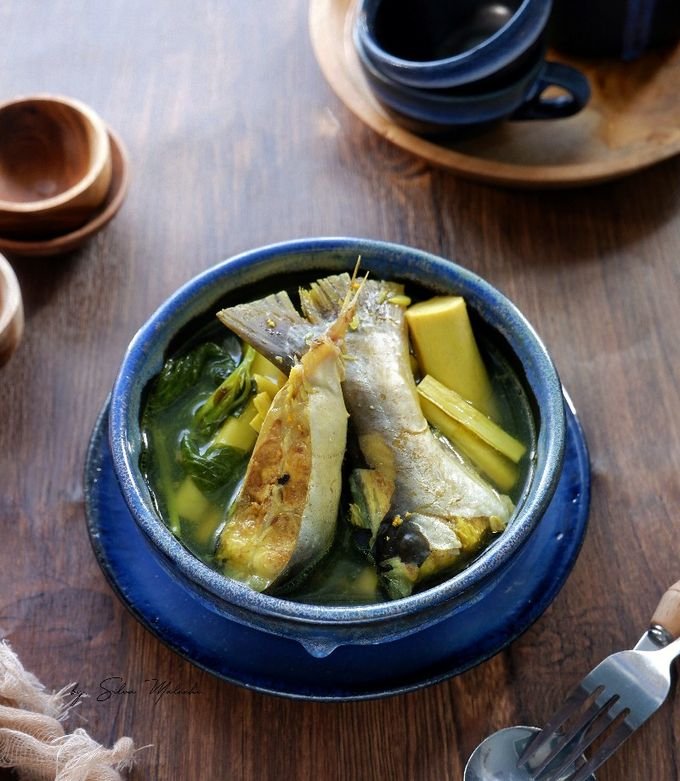
Sayur rotan muda khas suku Dayak.
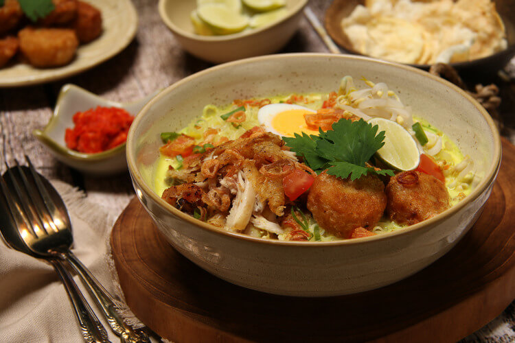
Kuah bening harum rempah, disajikan dengan ketupat.
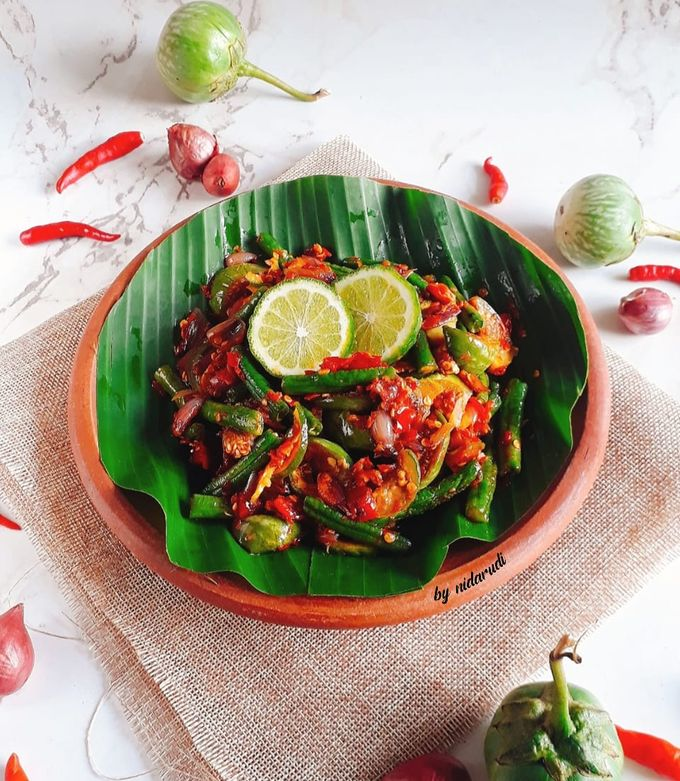
Sambal terong dan petai khas Kutai.
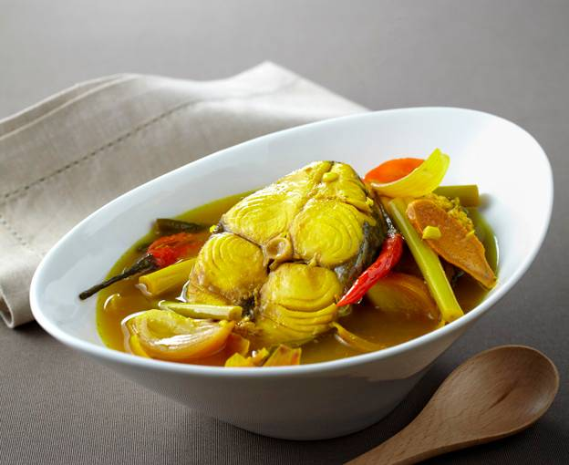
Ikan asam pedas khas pesisir Kalimantan.
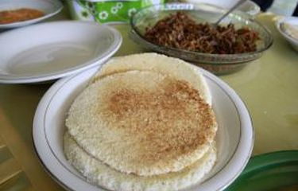
Roti singkong tipis khas Mandar.

Ikan bakar dengan sambal khas Palu.
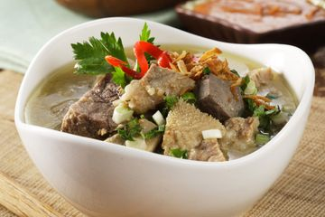
Sup kacang tanah dan daging khas Bugis.
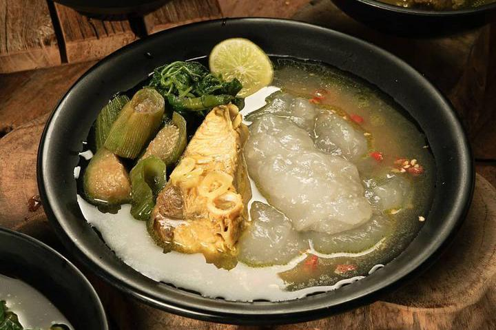
Olahan sagu disajikan dengan ikan kuah kuning.
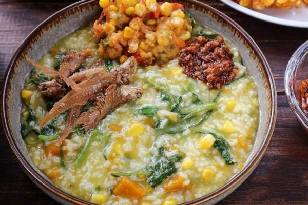
Bubur sayur sehat khas Manado.
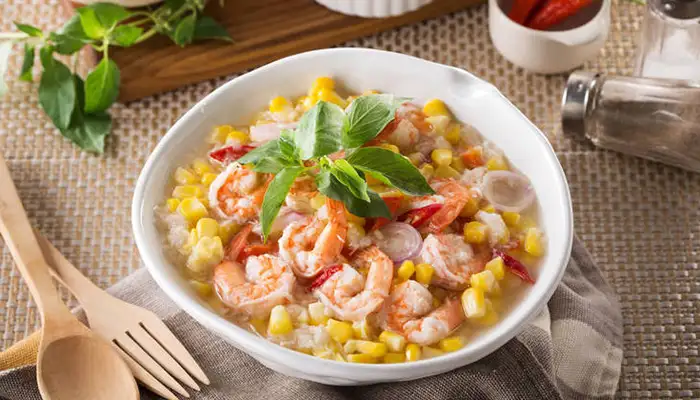
Sup jagung segar dengan ikan dan udang.
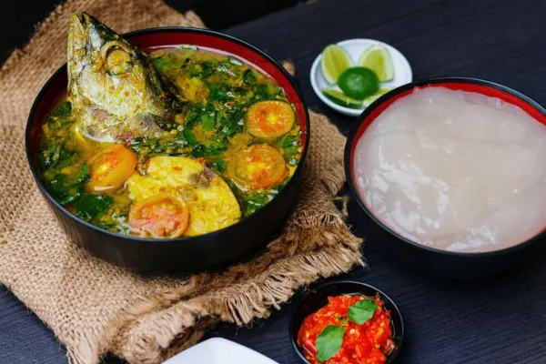
Sagu disajikan dengan ikan kuah kuning.

Ikan mentah segar dengan jeruk nipis dan cabai.

Olahan sagu panggang kaya serat dan rasa alami.

Pisang panggang disajikan dengan kelapa parut manis.